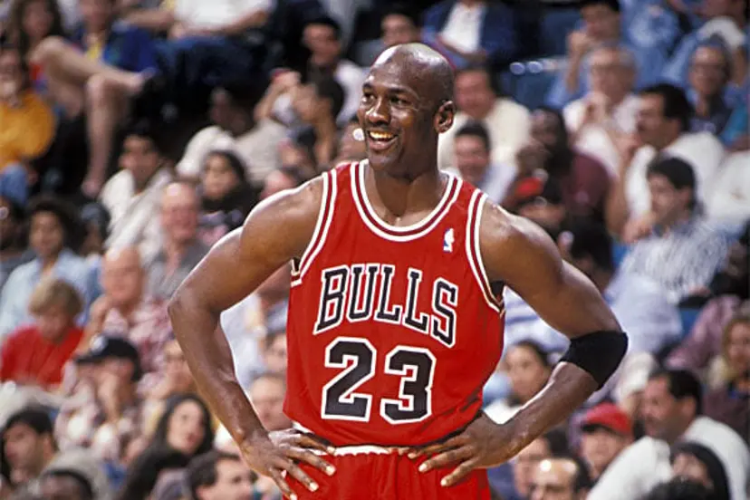
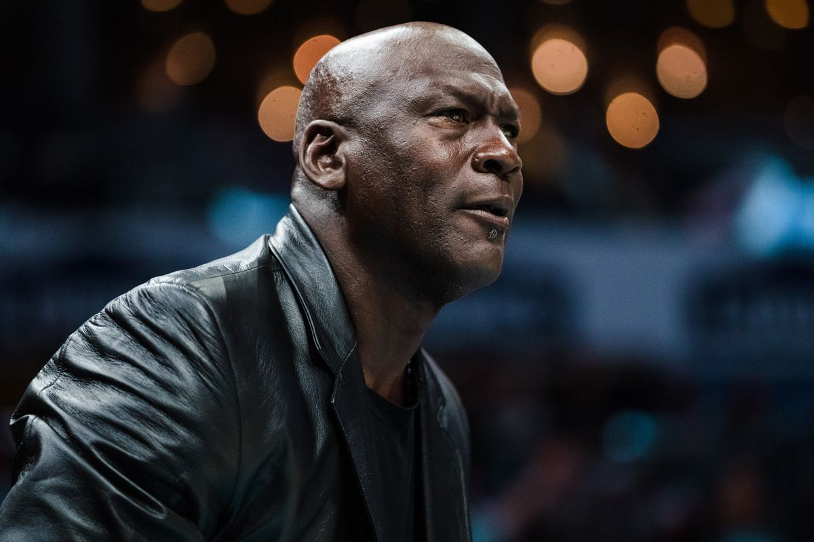

Michael Jordan nasceu em 17 de fevereiro de 1963, em Brooklyn, Nova York, mas foi criado em Wilmington, na Carolina do Norte. Ele era o quarto de cinco filhos de James e Deloris Jordan. Desde jovem, Jordan demonstrou uma intensa competitividade, seja em esportes, seja nos estudos. Sua infância foi marcada por uma educação rígida, com seus pais enfatizando valores como disciplina e ética de trabalho. Ele começou a se destacar no basquete durante o ensino médio, embora inicialmente não tenha sido selecionado para o time principal de sua escola, o que se tornou uma história famosa de superação.
Jordan frequentou a Universidade da Carolina do Norte (UNC) em Chapel Hill, onde estudou geografia cultural. Ele também jogou basquete universitário e rapidamente chamou a atenção de treinadores e especialistas por sua habilidade em quadra. Seu tempo na universidade foi crucial para o desenvolvimento de seu jogo, e ele continuou a crescer como atleta sob a orientação do treinador Dean Smith.

Em 1984, Jordan deixou a UNC para se declarar elegível para o draft da NBA, sendo escolhido pelo Chicago Bulls. Desde o início de sua carreira profissional, ele trouxe uma nova energia para a liga, mostrando uma dedicação incansável ao esporte. Ao longo dos anos, Jordan passou por altos e baixos, incluindo uma breve aposentadoria do basquete em 1993, após a trágica morte de seu pai. Durante essa pausa, ele tentou a carreira no beisebol, algo que era um sonho de seu pai. No entanto, Jordan acabou retornando ao basquete em 1995.
Após se aposentar definitivamente em 2003, Jordan focou seus esforços no mundo dos negócios. Ele se tornou proprietário majoritário do Charlotte Hornets, uma franquia da NBA, e também continuou a expandir sua marca pessoal, que inclui a popular linha de calçados e roupas "Air Jordan", em parceria com a Nike. Jordan é conhecido por sua abordagem discreta à vida pessoal, apesar de sua imensa fama, e geralmente evita os holofotes da mídia. Fora das quadras, Jordan casou-se duas vezes. Seu primeiro casamento foi com Juanita Vanoy, com quem teve três filhos: Jeffrey, Marcus e Jasmine. Eles se divorciaram em 2006. Em 2013, Jordan casou-se com Yvette Prieto, uma modelo cubano-americana, e o casal tem duas filhas gêmeas, Victoria e Ysabel.
Jordan é amplamente admirado por sua mentalidade competitiva e ética de trabalho, que o acompanham até hoje em suas atividades empresariais e na administração de sua equipe de basquete.